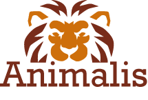
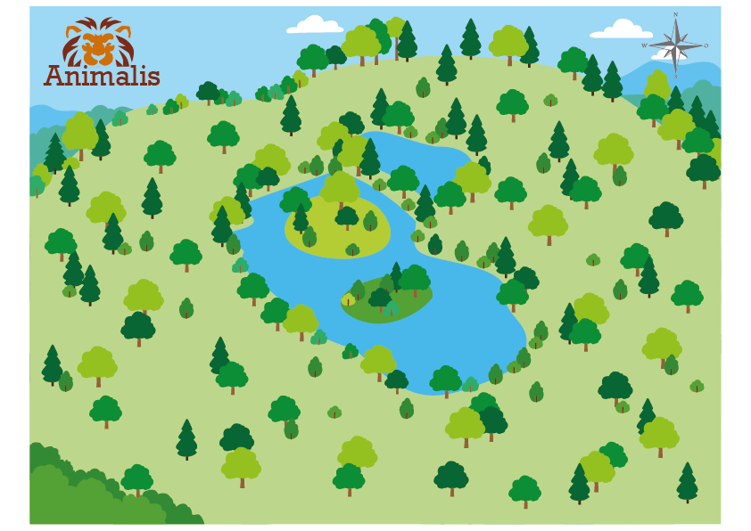

Hinter dem Zoo geht's weiter – Naturschutzpodcast
Podcast der Zoologischen Gesellschaft Frankfurt und des Zoo Frankfurt mit spannenden Einblicken in den Artenschutz.

Zoo Animalis · Historie & Erlebnis
Entdecke auf unserer interaktiven Karte, wann welche Tiere in den Zoo gekommen sind, höre dir spannende Podcast und schaue dir unterhaltsame Videos über verschiedene Theman an. Am Ende kannst du dein Wissen über Tiere testen!
Historie

Das Land wird gekauft auf dem Animalis in den nächsten Jahren entstehen wird. Es besteht aus Seen mit kleinen Inseln, vielen Wiesen und zahlreichen Bäumen und Pflanzen. Ein Paradies für die zukünftigen Bewohner!
Video- und Podcast-Bereich
Die Podcasts werden regelmäßig ausgetauscht. Es lohnt sich also regelmäßig vorbei zu schauen!
Podcast der Zoologischen Gesellschaft Frankfurt und des Zoo Frankfurt mit spannenden Einblicken in den Artenschutz.
Der Zoocast mit spannenden Einblicken in Artenschutz, Umweltbildung und den Zooalltag.
Die Videos werden ebenfalls regelmäßig getauscht. Es lohnt sich also regelmäßig vorbei zu schauen!
Ein spannender Videobeitrag mit Eindrücken aus dem Zooalltag und dem Leben der Tiere.
Ein weiteres Video mit spannenden Beobachtungen und lebendigen Momenten aus dem Zooleben.
Quiz- und Wissensbereich
Teste dein Wissen und entdecke spannende Fakten rund um Tiere! Es lohnt sich regelmäßig vorbei zu schauen, da wir uns regelmäßig neue Fragen für euch ausdenken.
Frage 1 von 10